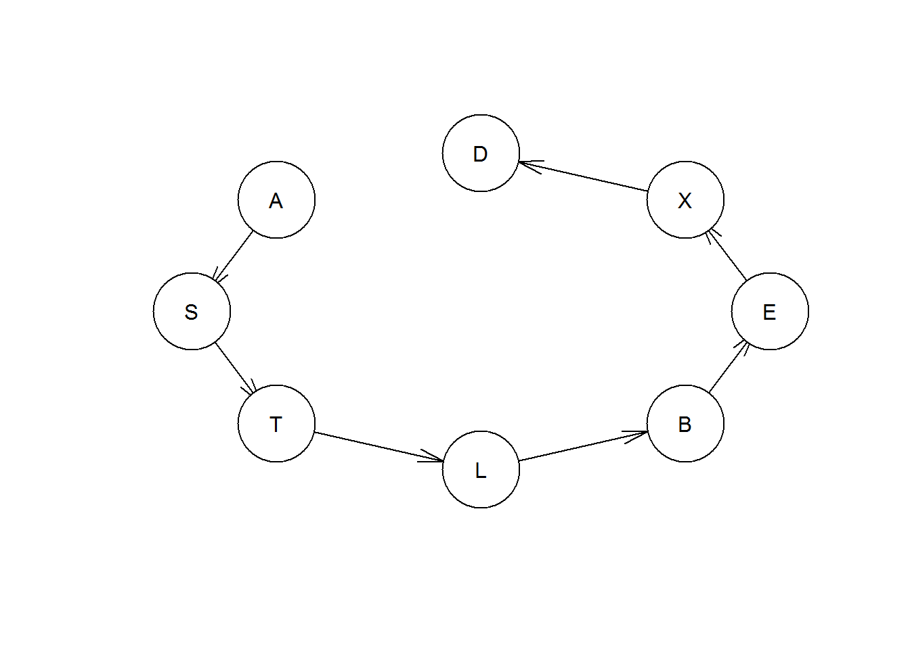
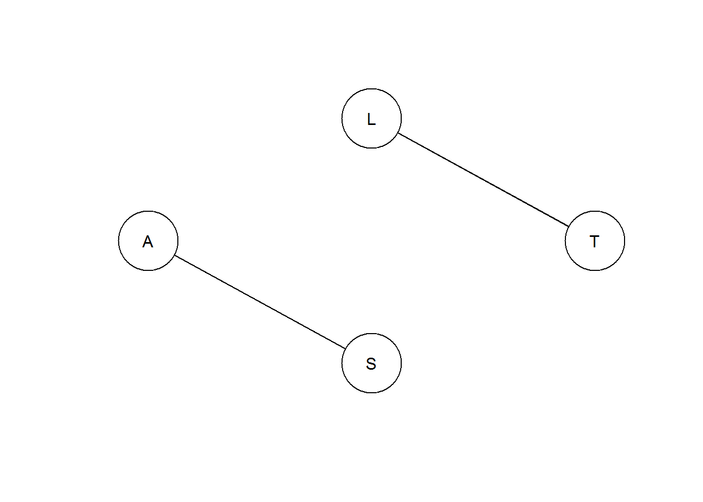
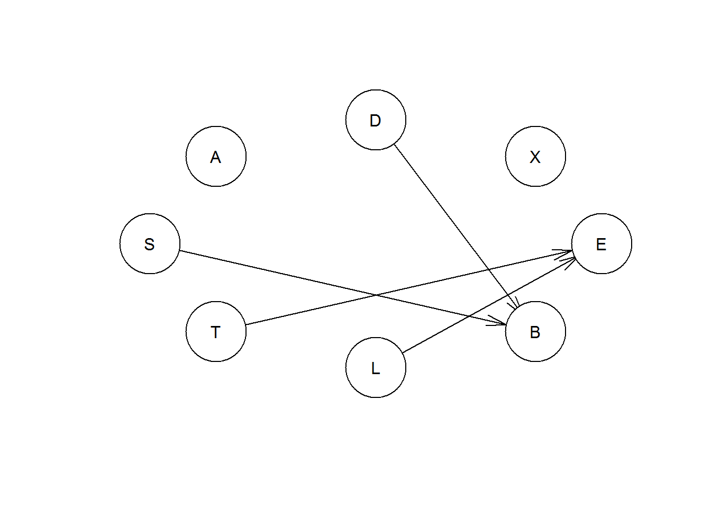
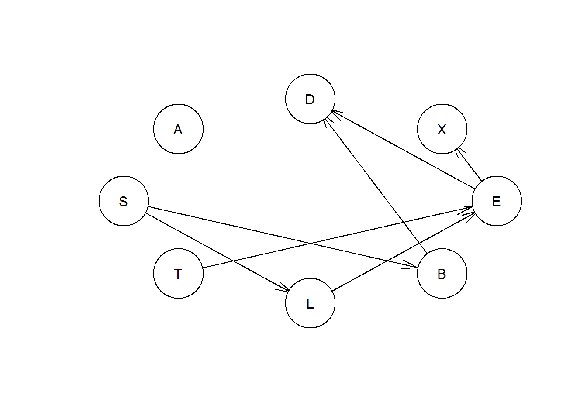
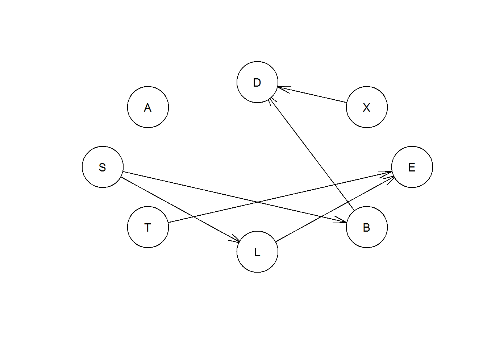
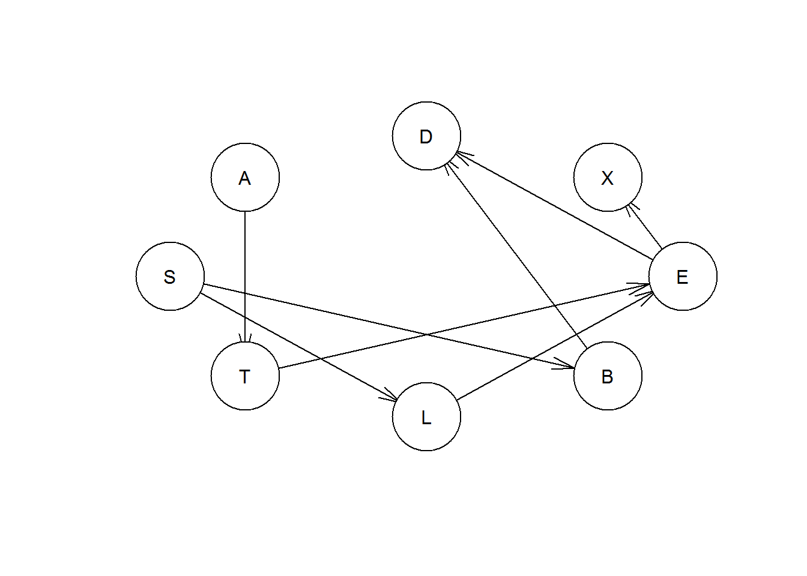
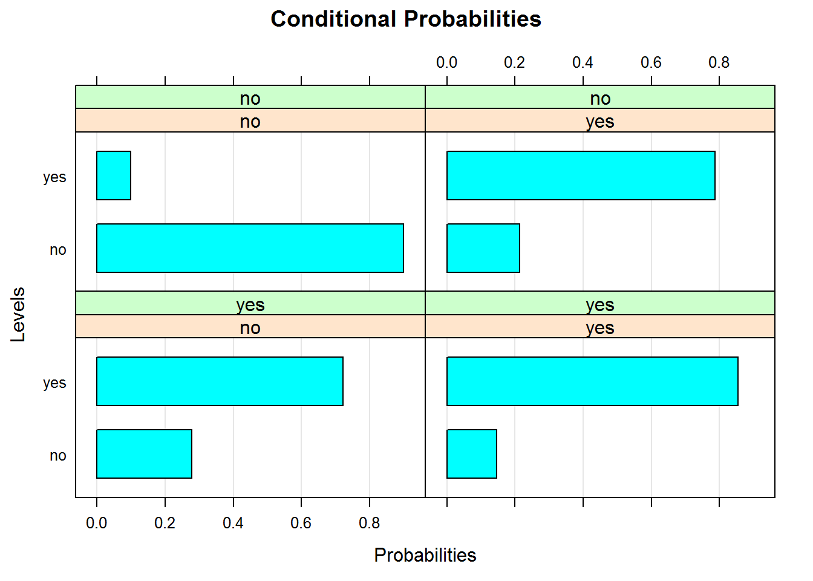
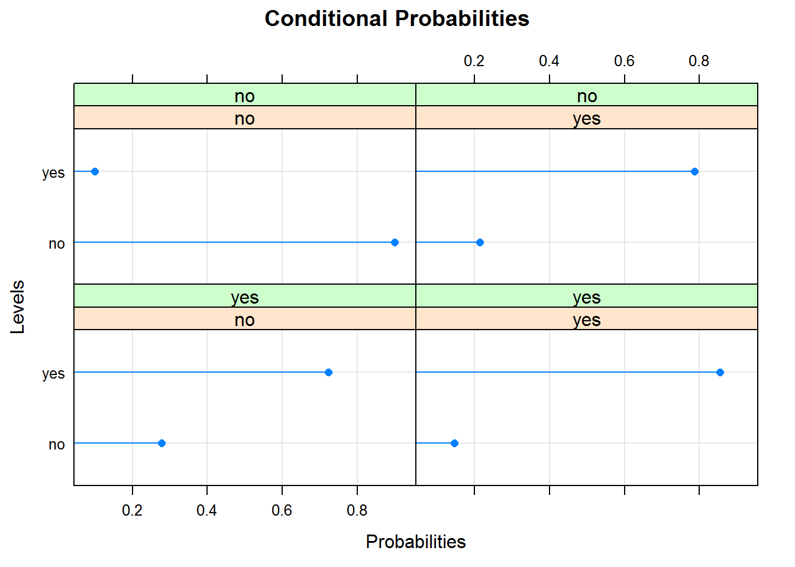

BayesNet Lab
James Simmons and Tim Caldwell
Note: much of this lab was created using the bnlearn site.
Background
Element/concepts of Bayesian Networks have been around since the early 1900s. However, modern Bayesian network theory emerged out of artificial intelligence research in the 1980s, with the term ‘Bayesian Networks’ coined by Judea Pearl in 1985.
These networks are termed Bayesian because:
- Input or starting information can be subjective
- May use Bayes Rule to update model information
- Distinguishes between causal and evidential modes
Also known as:
belief networks, Bayesian belief networks, Bayes nets, causal probabilistic networks, influence diagrams, and BNs.
Note: BNs have the same network requirements and components as SEMs (Structural Equation Models). Refer to the SEM lecture for more details. However, BNs are different because they replace the SEM correlation coefficients and r2s with conditional probability tables at each node (defined below).
Basic BN graph components/terminology
- node: an endogenous, exogenous, or latent variable of the system
- arc: directional arrow depicting the casual relationship between two nodes. Arcs can also be non-directional when the casual relationship between two nodes is unknown or unable to be determined.
When can BNs be used?
Anytime one can model a system/process AND
Meet the DAG requirements AND
Satisfactorily address the ‘Challenges’ listed below
DAG (directed acyclic graph):
- each node to have a directional relationship with at least one other node
- no cycles
- no loops
- d-separation
Advantages
- Various knowledge sources/types: categorical, ordinal, continuous, discrete, ‘expert knowledge’, or mixed data
- Small/missing data: no sample size requirements
- Structural learning: can estimate unknown node relationships and entire network structure
- Uncertainty/decision analysis: ‘influence diagrams’ can quantify uncertainty and decision outcomes
- Omni-directional inference: can make inferences in any direction within the network
- Fast analytical solutions possible: with conjugate priors, fast analytical answers possible without having to run time consuming numerical approximation analyses
Challenges
- Expert/prior knowledge: ‘expert’ knowledge may not be very good
- Small data sets/missing data: more data is always preferable to less
- Discretizing continuous variables: information is lost in this process
- Feedback loops - acyclic: hard to model systems with these features
Five main steps to Bayesian Network analysis.
1. Network setup: manually creating nodes and arcs.
2. Network structure learning: algorithmically creating nodes and arcs, and selecting the ‘best’ network.
3. ‘Parameter learning’ or ‘training’ the network: creating conditional probability tables at each node.
4. Model validation: validating that the model/network fits the data.
5. Inference: estimating network outcomes, given a starting value(s).
Bayesian Network Example
We will setup a Bayesian network structure from beginning to end using bnlearn.
bnlearn is an R package for performing Bayesian Network analysis: manually creating network structure, learning network graphical structure, estimating node joint conditional probability tables, validating models, and performing inference.
First, install the bnlearn package: install.packages(“bnlearn”).
We will be using the ‘ASIA’ (sometimes called Lung Cancer) dataset from the Bayesian Network Repository on the bnlearn site. “‘ASIA’ is a synthetic data set from Lauritzen and Spiegelhalter (1988) about lung diseases (tuberculosis, lung cancer or bronchitis) and visits to Asia. Shortness-of-breath (dyspnoea) may be due to tuberculosis, lung cancer or bronchitis, or none of them, or more than one of them. A recent visit to Asia increases the chances of tuberculosis, while smoking is known to be a risk factor for both lung cancer and bronchitis. The results of a single chest X-ray do not discriminate between lung cancer and tuberculosis, as neither does the presence or absence of dyspnoea.”
Now, call up the ‘Asia’ dataset in the bnlearn library.
library(bnlearn)## Warning: package 'bnlearn' was built under R version 3.3.2##
## Attaching package: 'bnlearn'## The following object is masked from 'package:stats':
##
## sigmahead(asia)## A S T L B E X D
## 1 no yes no no yes no no yes
## 2 no yes no no no no no no
## 3 no no yes no no yes yes yes
## 4 no no no no yes no no yes
## 5 no no no no no no no yes
## 6 no yes no no no no no yesThe ASIA dataset contains the following variables and data:
- D (dyspnoea), a two-level factor with levels yes and no.
- T (tuberculosis), a two-level factor with levels yes and no.
- L (lung cancer), a two-level factor with levels yes and no.
- B (bronchitis), a two-level factor with levels yes and no.
- A (visit to Asia), a two-level factor with levels yes and no.
- S (smoking), a two-level factor with levels yes and no.
- X (chest X-ray), a two-level factor with levels yes and no.
- E (tuberculosis versus lung cancer/bronchitis), a two-level factor with levels yes and no.
And for later reference, the ‘true’ network structure is shown below: 
It is important note here that although this example uses on two-level factor data, Bayesian networks can use categorical, ordinal, discrete, continuous, and mixed data (combination of the previously listed data types).
1. Network setup
Before we work with the ‘Asia’ dataset, however, we will show an example of how to create a simple network structure from scratch. One can create an ‘empty’ (no arcs) or ‘random’ (randomly assigned arcs between the nodes) networks, but we will not cover these here. Examples of how to setup these networks can be found under Examples on the bnlearn site. We will focus on creating a specific network structure. You may want to use this method when you are fairly confident in the ‘true’ network structure.
dag= empty.graph(LETTERS[c(1,19,20,12,2,5,24,4)]) #create an empty DAG with nodes
asia.structure = matrix(c("A", "S", "S", "T", "T","L", "L","B", "B", "E","E", "X","X","D"),
ncol = 2, byrow = TRUE,
dimnames = list(NULL, c("from", "to"))) #assign the DAG structure
asia.structure## from to
## [1,] "A" "S"
## [2,] "S" "T"
## [3,] "T" "L"
## [4,] "L" "B"
## [5,] "B" "E"
## [6,] "E" "X"
## [7,] "X" "D"arcs(dag) <- asia.structure #now asign the structure to the empty graph using arcs, which makes it a bnlearn object
dag##
## Random/Generated Bayesian network
##
## model:
## [A][S|A][T|S][L|T][B|L][E|B][X|E][D|X]
## nodes: 8
## arcs: 7
## undirected arcs: 0
## directed arcs: 7
## average markov blanket size: 1.75
## average neighbourhood size: 1.75
## average branching factor: 0.88
##
## generation algorithm: Emptyplot(dag)
Also, one can introduce undirected arcs, by including both directions of an arc in the arc set (e.g. A to B and B to A), as long as no cycle will be introduced in either direction. For example:
dag2 = empty.graph(LETTERS[c(1,19,20,12)])
asia.structure2 = matrix(c("A", "S", "S", "A", "T","L", "L", "T"),
ncol = 2, byrow = TRUE,
dimnames = list(NULL, c("from", "to")))
arcs(dag2) = asia.structure2
plot(dag2)
Performing these commands also conducts automatic checks for violations in the network structure requirements. Detected structure violations will be communicated via error messages. The main violation checks are for missing nodes, cycles, and loops.
In addition, here is an example of a network structure with ‘expert’ opinion, where we plug estimates right into the node joint conditional probability distribution.
Expert1 = matrix(c(0.4, 0.6), ncol = 2, dimnames = list(NULL, c("LOW", "HIGH")))
Expert1## LOW HIGH
## [1,] 0.4 0.6Expert2 = c(0.5, 0.5, 0.4, 0.6, 0.3, 0.7, 0.2, 0.8)
dim(Expert2) = c(2, 2, 2)
dimnames(Expert2) = list("C" = c("TRUE", "FALSE"), "A" = c("LOW", "HIGH"), "B" = c("GOOD", "BAD"))
Expert2## , , B = GOOD
##
## A
## C LOW HIGH
## TRUE 0.5 0.4
## FALSE 0.5 0.6
##
## , , B = BAD
##
## A
## C LOW HIGH
## TRUE 0.3 0.2
## FALSE 0.7 0.82. Network structure learning
In addition to manually creating a network structure (example above), network structures can be created by the data via structure learning algorithms.
There are three main types of structure learning algorithms: constraint-based, score-based, and hybrid (mixture of constraint-based and score-based). The user can specify either (Akaike Information Criterion), BIC (Bayesian Information Criterion), or BDE (Bayesian Dirichlet) scoring to determine the best network structure. The algorithms use different techniques to cycle through various network structures, and then chooses as the ‘best’ network the structure with best score. The default scoring method for score-based and hybrid algorithms is BIC.
Constraint-based:
No beginning/starting model structure is used with these algorithms. The algorithms build the structure by searching for conditional dependencies between the variables. bnlearn includes the following constraint-based algorithms:
- Grow-Shrink (GS)
- Incremental Association Markov Blanket (IAMB)
- Fast Incremental Association (Fast-IAMB)
- Interleaved Incremental Association (Inter-IAMB)
- Max-Min Parents & Children (MMPC)
- Semi-Interleaved Hiton-PC (SI-HITON-PC)
Score-based:
User leverages their knowledge of the system to create a network, codes his/her confidence in the network, and inputs the data. The algorithm then estimates the most likely model structure. bnlearn includes the following scored-based algorithms:
- Hill Climbing (HC)
- Tabu Search (Tabu)
Hybrid:
Mixture of constraint-based and score-based methods. bnlearn includes the following hybrid algorithms:
- Max-Min Hill Climbing (MMHC)
- General 2-Phase Restricted Maximization (RSMAX2)
First, an example of the contraint-based learning using the Incremental Association Markov Blanket (IAMB) algorithm:
iambex <- iamb(asia) #structure learning
iambex##
## Bayesian network learned via Constraint-based methods
##
## model:
## [A][S][T][L][X][D][B|S:D][E|T:L]
## nodes: 8
## arcs: 4
## undirected arcs: 0
## directed arcs: 4
## average markov blanket size: 1.50
## average neighbourhood size: 1.00
## average branching factor: 0.50
##
## learning algorithm: IAMB
## conditional independence test: Mutual Information (disc.)
## alpha threshold: 0.05
## tests used in the learning procedure: 111
## optimized: TRUEplot(iambex)
Now, an example of score-based learning using the Hill Climbing (HC) algorithm:
hcex <- hc(asia)
hcex##
## Bayesian network learned via Score-based methods
##
## model:
## [A][S][T][L|S][B|S][E|T:L][X|E][D|B:E]
## nodes: 8
## arcs: 7
## undirected arcs: 0
## directed arcs: 7
## average markov blanket size: 2.25
## average neighbourhood size: 1.75
## average branching factor: 0.88
##
## learning algorithm: Hill-Climbing
## score: BIC (disc.)
## penalization coefficient: 4.258597
## tests used in the learning procedure: 77
## optimized: TRUEplot(hcex)
And a hybrid learning example with the Max-Min Hill Climbing (MMHC) algorthim:
mmex <- mmhc(asia)
mmex##
## Bayesian network learned via Hybrid methods
##
## model:
## [A][S][T][X][L|S][B|S][E|T:L][D|B:X]
## nodes: 8
## arcs: 6
## undirected arcs: 0
## directed arcs: 6
## average markov blanket size: 2.00
## average neighbourhood size: 1.50
## average branching factor: 0.75
##
## learning algorithm: Max-Min Hill-Climbing
## constraint-based method: Max-Min Parent Children
## conditional independence test: Mutual Information (disc.)
## score-based method: Hill-Climbing
## score: BIC (disc.)
## alpha threshold: 0.05
## penalization coefficient: 4.258597
## tests used in the learning procedure: 65
## optimized: TRUEplot(mmex)
Network Scores
Below are examples of the AIC and BDE scores for the best network in the Hill Climbing (HC) algorithm (score-based learning) example shown above.
score(hcex,asia,type="aic") #getting aic value for full network## [1] -11051.9score(hcex,asia,type="bde") #getting bde value for full network## [1] -11147.65The above algorithm results also provide a good example of what happens when the ‘best’ network structure doesn’t contain arcs for all of the nodes. The network from the score-based algorithm is the closest to the ‘true’ network, but the A node is unconnected to the network. We can investigate why this is the case with the A node. For example, from the true model we know that node A influences node T. Let us calculate the score from A to T, and then from T to A.
eq.net = set.arc(hcex, "A", "T") #setting arcs to get actual scores from individual relationships
eq.net1 = set.arc(hcex,"T", "A") #setting arcs to get actual scores from individual relationships
score(eq.net,asia,type="aic") #retriveing score## [1] -11051.09score(eq.net1,asia,type="aic") #retriving score## [1] -11051.09We see that when we set the arc from A to T, or from T to A, we get the same network score (-11051.09). Thus, the relationship between A and T is termed ‘score equivalent’, since either direction provides the same/equivalent network score - changing the node direction does not change the network score.
Alternatively, if we change the arrow direction between two other nodes, we will see the network score change. For example, if we change the relationship between nodes L and E:
eq.net = set.arc(hcex, "L", "E")
eq.net1 = set.arc(hcex,"E", "L")
score(eq.net,asia,type="aic")## [1] -11051.9score(eq.net1,asia,type="aic")## [1] -11271.59We see that the network score decreases when we reverse the direction between nodes L and E.
At this point, since the algorithms have not been able determine the relationship of A to T (or other nodes), we may want to rely on literature, ‘expert’ opinion, ecology theory, etc. to argue for the best relationship of node A to node T or the rest of the structure.
3. ‘Parameter learning’ or ‘training’ the network
The bn.fit command generates parameter estimates for the conditional probability tables at each node. However, the bn.fit command requires that the network structure represent a DAG (directed acyclic graph); “otherwise their parameters cannot be estimated because the factorization of the global probability distribution of the data into the local ones (one for each variable in the model) is not completely known.” Thus, undirected arcs must be set prior to parameter estimation. We see in the above estimated structure that the ‘A’ node is not connected to the network structure. Thus, before we apply bn.fit, we must set a directional arc for A. Due to ‘expert’ opinion, knowledge of the system, or previous studies, let’s set an arc between A and T. The default method for the parameter estimation is maximum likelihood (mle).
hcex1 = set.arc(hcex, from = "A", to = "T") #creating a new DAG with the A to T relationship(based on our previous knowledge that goint to asia effects having tuberculosis)
plot(hcex1)
Now we can run bn.fit to get the node parameter estimates:
fit = bn.fit(hcex1, asia) # fitting the network with conditoinal probability tables
fit ##
## Bayesian network parameters
##
## Parameters of node A (multinomial distribution)
##
## Conditional probability table:
## no yes
## 0.9916 0.0084
##
## Parameters of node S (multinomial distribution)
##
## Conditional probability table:
## no yes
## 0.497 0.503
##
## Parameters of node T (multinomial distribution)
##
## Conditional probability table:
##
## A
## T no yes
## no 0.991528842 0.952380952
## yes 0.008471158 0.047619048
##
## Parameters of node L (multinomial distribution)
##
## Conditional probability table:
##
## S
## L no yes
## no 0.98631791 0.88230616
## yes 0.01368209 0.11769384
##
## Parameters of node B (multinomial distribution)
##
## Conditional probability table:
##
## S
## B no yes
## no 0.7006036 0.2823062
## yes 0.2993964 0.7176938
##
## Parameters of node E (multinomial distribution)
##
## Conditional probability table:
##
## , , L = no
##
## T
## E no yes
## no 1 0
## yes 0 1
##
## , , L = yes
##
## T
## E no yes
## no 0 0
## yes 1 1
##
##
## Parameters of node X (multinomial distribution)
##
## Conditional probability table:
##
## E
## X no yes
## no 0.956587473 0.005405405
## yes 0.043412527 0.994594595
##
## Parameters of node D (multinomial distribution)
##
## Conditional probability table:
##
## , , E = no
##
## B
## D no yes
## no 0.90017286 0.21373057
## yes 0.09982714 0.78626943
##
## , , E = yes
##
## B
## D no yes
## no 0.27737226 0.14592275
## yes 0.72262774 0.85407725We can retrieve the conditional probability of a specific node using the common $ operator, for example:
fit$L##
## Parameters of node L (multinomial distribution)
##
## Conditional probability table:
##
## S
## L no yes
## no 0.98631791 0.88230616
## yes 0.01368209 0.11769384fit$D##
## Parameters of node D (multinomial distribution)
##
## Conditional probability table:
##
## , , E = no
##
## B
## D no yes
## no 0.90017286 0.21373057
## yes 0.09982714 0.78626943
##
## , , E = yes
##
## B
## D no yes
## no 0.27737226 0.14592275
## yes 0.72262774 0.85407725And we can visualize the node conditoinal probability tables with barcharts:
bn.fit.barchart(fit$D)## Loading required namespace: lattice
Or alternatively with a dot plot:
bn.fit.dotplot(fit$D)
In addition to maximum likelihood, parameter estimation can be done performed with Bayesian methods - but currently only with discrete data. Below is an example with the Asia dataset. The same bn.fit command line is used, but the method is specified as ‘bayes’.
fit1 = bn.fit(hcex1, asia, method = "bayes")
fit1##
## Bayesian network parameters
##
## Parameters of node A (multinomial distribution)
##
## Conditional probability table:
## no yes
## 0.990618762 0.009381238
##
## Parameters of node S (multinomial distribution)
##
## Conditional probability table:
## no yes
## 0.497006 0.502994
##
## Parameters of node T (multinomial distribution)
##
## Conditional probability table:
##
## A
## T no yes
## no 0.991033649 0.904255319
## yes 0.008966351 0.095744681
##
## Parameters of node L (multinomial distribution)
##
## Conditional probability table:
##
## S
## L no yes
## no 0.98534137 0.88154762
## yes 0.01465863 0.11845238
##
## Parameters of node B (multinomial distribution)
##
## Conditional probability table:
##
## S
## B no yes
## no 0.7002008 0.2827381
## yes 0.2997992 0.7172619
##
## Parameters of node E (multinomial distribution)
##
## Conditional probability table:
##
## , , L = no
##
## T
## E no yes
## no 0.9997301673 0.0294117647
## yes 0.0002698327 0.9705882353
##
## , , L = yes
##
## T
## E no yes
## no 0.0038051750 0.1923076923
## yes 0.9961948250 0.8076923077
##
##
## Parameters of node X (multinomial distribution)
##
## Conditional probability table:
##
## E
## X no yes
## no 0.95609493 0.01200000
## yes 0.04390507 0.98800000
##
## Parameters of node D (multinomial distribution)
##
## Conditional probability table:
##
## , , E = no
##
## B
## D no yes
## no 0.8997410 0.2140392
## yes 0.1002590 0.7859608
##
## , , E = yes
##
## B
## D no yes
## no 0.2813620 0.1496815
## yes 0.7186380 0.85031854. Model Validation
Now that we have a network structure and node conditional probability tables, the next step is to validate the model, or assess model fit to the data. “Cross-validation is a standard way to obtain unbiased estimates of a model’s goodness of fit. By comparing such measures for different learning strategies (different combinations of learning algorithms, fitting techniques and the respective parameters) we can choose the optimal one for the data at hand in a principled way.”
bnlearn contains 3 methods for cross-validation: k-fold(default), custom, and hold out. We will compare the first two, k-fold and custom.
Heres an example for the K fold method
The data are randomly partitioned into k subsets of equal size. Each subset is used in turn to validate the model fitted on the remaining k - 1 subsets.
A lower expected loss value is better. Here we will cross-validate two learning algorithms - Max-Min Hill-Climb (mmhc) and Hill-Climb (hc). And the BDE scoring method will be used, which requires an iss (‘imaginery sample size’ used for bde scores) term.
bn.cv(asia, bn = "mmhc", algorithm.args = list(score = "bde", iss = 1))##
## k-fold cross-validation for Bayesian networks
##
## target learning algorithm: Max-Min Hill-Climbing
## number of folds: 10
## loss function: Log-Likelihood Loss (disc.)
## expected loss: 2.405467bn.cv(asia, bn = "hc", algorithm.args = list(score = "bde", iss = 1))##
## k-fold cross-validation for Bayesian networks
##
## target learning algorithm: Hill-Climbing
## number of folds: 10
## loss function: Log-Likelihood Loss (disc.)
## expected loss: 2.209596We can specify the number of runs, standard is to do 10 runs.
bn.cv(asia, bn = "hc", runs = 10, algorithm.args = list(score = "bde", iss = 1))## Warning in entropy.loss(fitted = fitted, data = data, debug = debug): 2
## observations were dropped because the corresponding probabilities for node
## D were 0 or NaN.##
## k-fold cross-validation for Bayesian networks
##
## target learning algorithm: Hill-Climbing
## number of folds: 10
## loss function: Log-Likelihood Loss (disc.)
## number of runs: 10
## average loss over the runs: 2.21016
## standard deviation of the loss: 0.0004719826bn.cv(asia, bn = "mmhc", runs = 10, algorithm.args = list(score = "bde", iss = 1))##
## k-fold cross-validation for Bayesian networks
##
## target learning algorithm: Max-Min Hill-Climbing
## number of folds: 10
## loss function: Log-Likelihood Loss (disc.)
## number of runs: 10
## average loss over the runs: 2.405559
## standard deviation of the loss: 0.000418334So, based on these cross-validation results, it appears that the Hill-Climb algorithm produces a model/network structure that fits the data better - because its loss is approximately 2.2 compared to the Max-Min Hill-Climb loss at 2.4.
5. Inference
Finally, now that we have the structure and parameter estimates, we can make inferences from the network. One advantage of Bayesian networks is that inferences can be omni-directional, from the beginning to end, end to beginning, or middle to end or beginning of the process/system. We will show 2 examples here:
Begining to end: From Asia to Xray:
cpquery(fit1, event = (X=="yes"), evidence = ( A=="yes"))## [1] 0.1875The probability is about 17% that your xray is ‘yes’ when you have been to Asia (results may vary).
End to beginning: From Xray to Asia:
cpquery(fit1, event = (A=="yes"), evidence = ( X=="yes"))## [1] 0.01247772The probability is about 2% that you have been to Asia if your Xray is yes (results may vary).
Additional Resources
Books
Bayesian Networks: With Examples in R. 2014. Marco Scutari, Jean-Baptiste Denis.
Bayesian Networks in R: with Applications in Systems Biology. 2013. R. Nagarajan, M. Scutari and S. L?bre.
Bayesian Artificial Intelligence, Second Edition. 2010. Kevin B. Korb and Ann E. Nicholson.
Journal Articles
L. Uusitalo. Advantages and challenges of Bayesian networks in environmental modelling. 2007. Ecological Modeling (203): 312-318.
Gupta, S., Kim, H.W. Linking structural equation modeling to Bayesian networks: Decision support for customer retention in virtual communities. 2007. European Journal of Operational Research (190): 881-833.
Anderson, R A., Vasta, G. Causal modeling alternatives in operation research: Overview and application. 2004. European Journal of Operational Research (156): 92-109.
McCann et al. Bayesian belief networks: applications in ecology and natural resource management. 2006. Canadian Journal of Forest Research (36): 3053 - 3062.